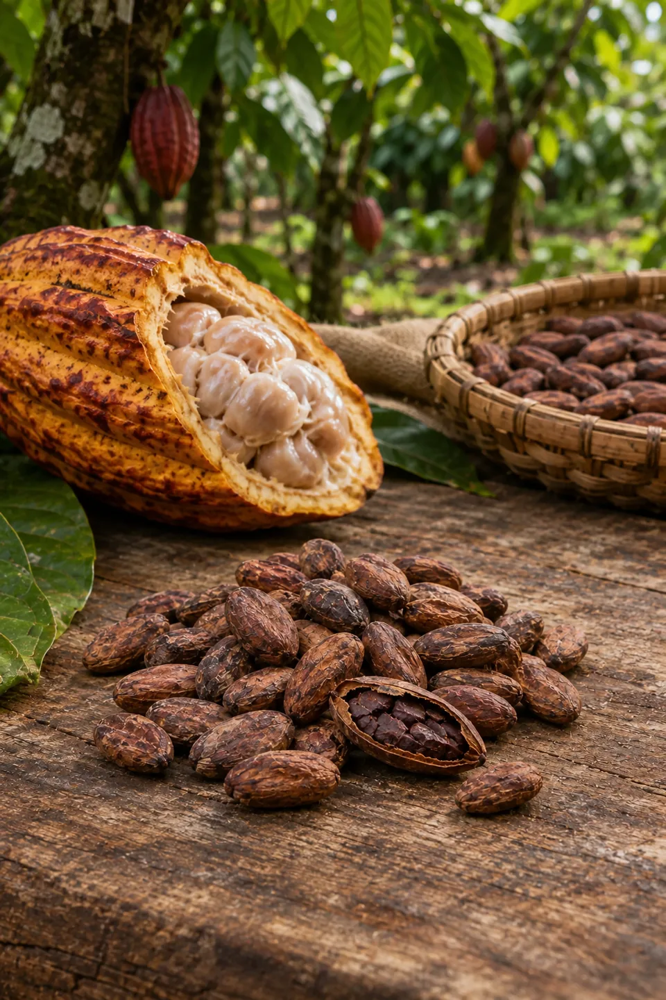

Cacao Criollo Fino de Aroma
Quillabamba, Región Cusco • Cosecha 2026
El Cacao Criollo Chuncho de la selva cusqueña es reconocido internacionalmente por su perfil sensorial excepcional, bajo amargor y notas frutales únicas para la alta chocolatería artesanal.
A través de esta campaña, 18 pequeños parceleros reciben capital de trabajo para optimizar sus cajones de fermentación en madera laurel y certificar su cosecha libre de cadmio.


Ficha Técnica y Condiciones de Inversión
Métricas transparentes de la campaña agrícola y el acuerdo formal de compra futura.
| Datos del Cultivo | Condiciones Económicas | ||
|---|---|---|---|
| Ecosistema Agrario: | Selva Alta / Valles Interandinos | Capital Solicitado: | S/. 18,500.00 |
| Variedad Genética: | Cacao Nativo Chuncho de Quillabamba | Rendimiento Esperado: | 12.0% anual proyectado |
| Grado de Fermentación: | ≥ 85% granos fermentados | Volumen Comprometido: | 6.5 Toneladas métricas |
| Mes de Acopio y Entrega: | Nivel de Cadmio: | < 0.10 mg/kg (Apto Exportación UE) | |
| Garantía de compra formalizada con contrato de compraventa a futuro con precio suelo garantizado. | |||
📦 Protocolo de Postcosecha Artesanal
- Cosecha Selectiva de Mazorcas: Corte preciso con tijera en punto óptimo de azúcar en baba.
- Desgrane en Finca: Separación del grano sin raspar la placenta leñosa para evitar aspereza.
- Fermentación Escalonada: 6 días en cajones de madera laurel con remoción cada 24 horas.
- Secado Natural al Sol: Deshidratación lenta sobre marquesinas de madera elevadas.
- Selección y Embolsado: Calibrado manual para eliminar granos planos o defectuosos.
🍫 Por Qué Invertir en Cacao Criollo
- Alta demanda por la chocolatería fina Bean-to-Bar a nivel mundial.
- Precios protegidos frente a intermediarios locales especuladores.
- Parcelas bajo sistemas agroforestales con árboles de sombra nativos.
Términos Especializados:
¿Interesado en asegurar tu lote de cacao fino?
Contáctanos para conocer los términos de participación y el cronograma de desembolsos.